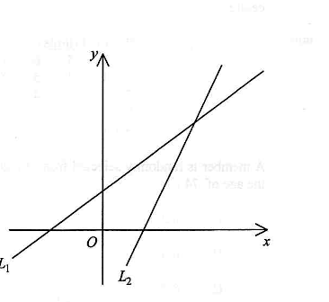

Tip: drag on the canvas to compare the two lines, or press a button to highlight a step.
Question
[2012 MC #25] In the figure, the equations of the straight lines \(L_1\) and \(L_2\) are
\(ax+y=b\) and \(cx+y=d\) respectively. Which of the following must be true?
I. \(a < 0\)
II. \(a < c\)
III. \(b > d\)
IV. \(ad > bc\)
A. I, II and III only
B. I, II and IV only
C. I, III and IV only
D. II, III and IV only

Figure (original exam diagram)
Step-by-step Solution
STEP 1 · Read off the slopes
Write each line in slope–intercept form \(y=mx+k\):
\(L_1:\ ax+y=b \;\Rightarrow\; y=-ax+b\), so slope of \(L_1\) is \(-a\).
\(L_2:\ cx+y=d \;\Rightarrow\; y=-cx+d\), so slope of \(L_2\) is \(-c\).
From the figure both lines rise from left to right, so both slopes are positive:
\(-a>0 \Rightarrow a<0\) and \(-c>0\Rightarrow c<0\). I is TRUE ✓
Slope-Intercept Form\(y=mx+k\)Rewriting \(ax+y=b\) as \(y=-ax+b\) shows the slope is \(-a\), and the rising line in the figure forces \(-a>0\).
STEP 2 · Compare the y-intercepts
The y-intercepts are \(b\) for \(L_1\) and \(d\) for \(L_2\).
On the \(y\)-axis the point of \(L_1\) lies above the point of \(L_2\), hence
\(b>d\). III is TRUE ✓
STEP 3 · Compare the x-intercepts
Putting \(y=0\): \(L_1\) meets the \(x\)-axis at \(x=\dfrac{b}{a}\), \(L_2\) at \(x=\dfrac{d}{c}\).
The figure shows \(L_1\) cuts the \(x\)-axis to the left of \(L_2\), so
\(\dfrac{b}{a} < \dfrac{d}{c}\), i.e. the x-intercept of \(L_1\) is the smaller one. II is NOT required ✗
x-intercept of a Line\(\text{put }y=0:\quad x=\dfrac{b}{a}\)The two \(x\)-intercepts \(\dfrac{b}{a}\) and \(\dfrac{d}{c}\) are compared directly from the figure.
STEP 4 · Deduce the product inequality \(ad>bc\)
From \(\dfrac{b}{a}<\dfrac{d}{c}\) multiply both sides by \(ac\). Since \(a<0\) and \(c<0\), the product \(ac>0\) and the inequality direction is unchanged:
$$bc < ad \quad\Longleftrightarrow\quad ad>bc.$$
IV is TRUE ✓
Also check II: e.g. with \(a=-1,\ c=-2\) (so \(a>c\)), \(b=2,\ d=1\) we get \(\frac{b}{a}=-2<\frac{d}{c}=-\frac12\), so II need not hold.
Multiplication Property of Inequality\(A0\ \Longrightarrow\ ACMultiplying \(\dfrac{b}{a}<\dfrac{d}{c}\) by \(ac>0\) leaves the inequality direction unchanged, giving \(bc
True statements: I, III and IV ⟹ Answer: C
PRACTICESimilar question — try it yourself
Question. In the figure, the equations of the straight lines \(L_{1}\) and \(L_{2}\) are \(ax+y=b\) and \(cx+y=d\) respectively. Both lines rise from left to right, the \(y\)-intercept of \(L_{1}\) is greater than that of \(L_{2}\), and \(L_{1}\) cuts the \(x\)-axis to the left of \(L_{2}\). (a) Show that \(a<0\) and \(c<0\). (b) Show that \(ad>bc\). (c) By taking \(a=-2\), \(c=-3\), \(b=5\) and \(d=1\), show that \(a
Show the worked solution
Step 1. Write \(L_{1}:y=-ax+b\) and \(L_{2}:y=-cx+d\). Both lines rise, so \(-a>0\) and \(-c>0\), i.e. \(a<0\) and \(c<0\).
Step 2. The \(y\)-intercepts are \(b\) and \(d\); the figure shows \(L_{1}\) cutting the \(y\)-axis above \(L_{2}\), so \(b>d\).
Step 3. \(L_{1}\) cuts the \(x\)-axis at \(x=\dfrac{b}{a}\) and \(L_{2}\) at \(x=\dfrac{d}{c}\), so \(\dfrac{b}{a}<\dfrac{d}{c}\). Since \(a<0\) and \(c<0\), the product \(ac>0\), so multiplying keeps the direction: \(bcbc\).
Step 4. (c) Here \(ac=(-2)(-3)=6>0\). Check the data: \(\dfrac{b}{a}=\dfrac{5}{-2}=-2.5\) and \(\dfrac{d}{c}=\dfrac{1}{-3}\approx-0.33\), so the \(x\)-intercept condition holds; also \(\dfrac{b}{a}<\dfrac{d}{c}\) gives \(bc=-15bc\) ✓. Yet \(a=-2>-3=c\), so \(a
Step 5. Conclusion: \(a<0\), \(c<0\) and \(ad>bc\) must hold, but \(a
Answer: (a) both slopes \(-a\) and \(-c\) are positive, so \(a<0\), \(c<0\); (b) \(bc-3=c\), so \(a